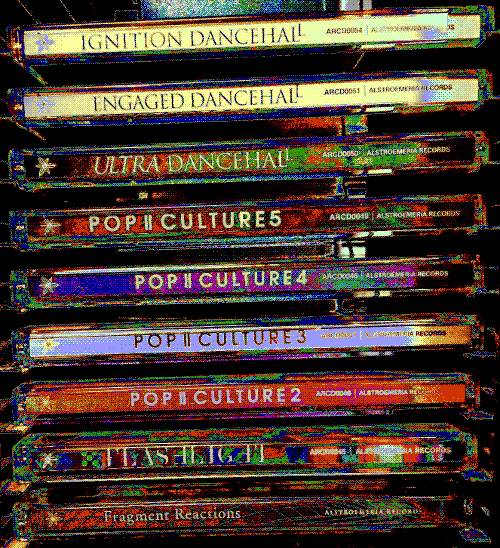
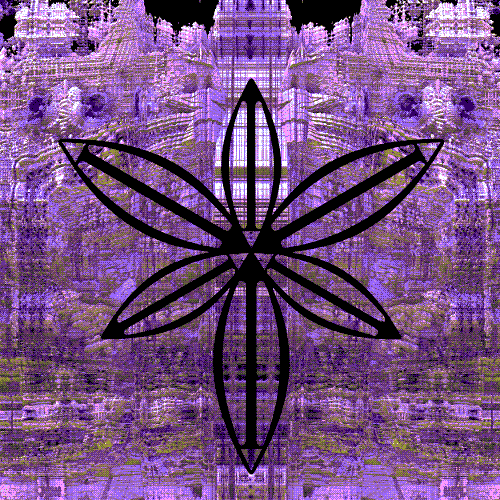
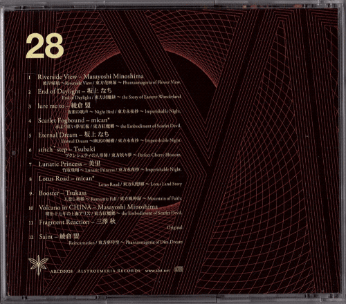

-
ＰＲＯＢＥ ＳＩＧＮＡＴＵＲＥ ［ＬＯＳＴ］
Ｓｅｎｄｉｎｇ ａｄｄｉｔｉｏｎａｌ ｐｒｏｂｅｓ．．．
-
｜ ｜ ｜ Ｒｅｔｕｒｎ？ ｜ ｜ ｜
-
Ｍｏｒｅ ａｕｄｉｏ ｈａｓ ｂｅｅｎ ［ＦＯＵＮＤ］．
Ｐｌａｙｉｎｇ ａ ［ＦＡＶＯＲＩＴＥ］ ｔｒａｃｋ ｎｏｗ．．．
-

-
．．．
Ｉｎｆｏｒｍａｔｉｏｎ ｃｏｒｒｕｐｔｅｄ， ｙｅｔ ａｎａｌｙｓｉｓ ｉｓ ｐｏｓｓｉｂｌｅ．
Ｓｅｎｄｉｎｇ ｐｒｏｂｅｓ ｔｏ ｇａｔｈｅｒ ｆｕｒｔｈｅｒ ［ＳＵＢＪＥＣＴ］
ｉｎｆｏｒｍａｔｉｏｎ．
-
５３７ ａｕｄｉｏ ｆｉｌｅｓ ｆｏｕｎｄ ｗｉｔｈｉｎ ｓｕｂｊｅｃｔ＇ｓ ｍａｔｒｉｘ
ｒｅｌａｔｅｄ ｔｏ ［？？？］， Ａｌｓｔｒｏｅｍｅｒｉａ Ｒｅｃｏｒｄｓ．
［Ｗｏｒｄｓ， ｓｏｕｎｄｓ， ａ ｍｅｓｓａｇｅ ｆｒｏｍ ｂｅｙｏｎｄ？］
-

-
Ｉｎｉｔｉａｌ ａｎａｌｙｓｉｓ ｓｈｏｗｓ ｎｏ ［ＦＯＬＤ］ ｄａｔａ． Ｙｅｔ
ｔｈｅ ｉｎｆｏｒｍａｔｉｏｎ ｉｓ ｌａｙｅｒｅｄ， ｐｅｒｈａｐｓ ｔｏ
ｐｒｅｖｅｎｔ ｔｈｅ ｔｒｕｔｈ ｆｒｏｍ ｂｅｉｎｇ ｄｉｓｃｏｖｅｒｅｄ．
Ｐｒｏｂｅｓ （ｃｌａｓｓｉｆｉｃａｔｉｏｎ： ［ １７］） ｈａｖｅ ｂｅｅｎ
ｒｅｖｉｖｅｄ ｔｏ ｓｅａｒｃｈ ｄｅｅｐｅｒ．
ｉｎｆｏｒｍａｔｉｏｎ．
-
［ＣＤ？］ ｂａｃｋ． Ｎｏｔｉｃｅ ｔｈｅ ｐａｔｔｅｒｎ．
Ｉｔ ｓｅｅｍｓ ｔｏ ｂｅ ｐｏｉｎｔｉｎｇ ｔｏ ａ ［ＬＯＣＡＴＩＯＮ］
-

-
．．．
Ｔｈｅ ｔｒｕｔｈ ｓｈａｌｌ ｂｅ ｄｉｓｃｏｖｅｒｅｄ， ｉｎ ｔｉｍｅ．
-
Ｄｅｔｅｃｔｉｎｇ ｆｕｒｔｈｅｒ ｓｉｇｎａｌｓ．．．
．．．
．．．
．．．
Ｓｉｇｎａｌｓ ａｒｅ ｆａｉｎｔ， ｂｕｔ ｗｉｌｌ ｂｅ ｌｉｎｋｅｄ ｈｅｒｅ ｉｎ ｔｈｅ
ｆｕｔｕｒｅ ｏｎｃｅ ｔｈｅｙ ａｒｅ ｓｔｒｅｎｇｔｈｅｎｅｄ．
-